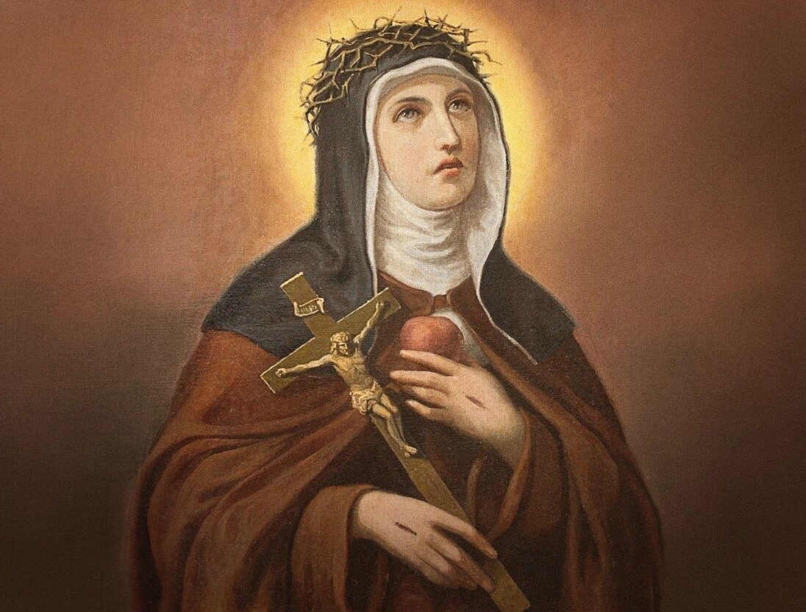

Santa Veronica Giuliani e la Madonna
Santa Veronica Giuliani, una delle figure più significative del francescanesimo italiano, è conosciuta per la sua intensa vita mistica e per le sue esperienze spirituali straordinarie.
Nata nel 1660 a Mercatello sul Metauro, un piccolo paese nelle Marche, Veronica entrò nel monastero delle Clarisse Cappuccine di Città di Castello, dove trascorse gran parte della sua vita, morendo nel 1727. La sua vita religiosa è segnata da una intensa unione a Dio, ma anche da un rapporto profondo con la Madonna, che ha avuto un ruolo fondamentale nella sua spiritualità.
Santa Veronica ha vissuto una intensa vita di preghiera e penitenza. È famosa per le sue esperienze mistiche, che includevano estasi, visioni e stimmate, che rivelavano la sua unione con Cristo in modo straordinario. Fu testimone di numerosi fenomeni mistici, ma la sua devozione alla Madonna si presentava come una costante fonte di ispirazione e consolazione.
Fin dalla sua infanzia, Veronica nutriva un amore profondo per Maria. Secondo le testimonianze della sua vita, la Madonna le appariva frequentemente, confortandola nei momenti di difficoltà e guidandola nel suo cammino spirituale. La Madonna, nella sua figura di Madre misericordiosa, non solo rappresentava per Veronica un rifugio sicuro, ma anche un modello di purezza e di dedizione a Dio.
Nel cuore del cammino mistico di Santa Veronica, la Madonna non era solo una presenza consolante, ma una figura attiva che la guidava verso la perfezione cristiana. Uno degli aspetti più toccanti della sua spiritualità è la meditazione sulle sofferenze di Maria durante la Passione di Cristo. Veronica si identificava profondamente con le sofferenze della Madonna, rappresentate dai sette dolori, vedendo in essi il cammino attraverso il quale ogni cristiano è chiamato a purificarsi e a diventare più simile a Cristo.
Quando la Santa era bambina, si recava spessissimo davanti alle immagini della Madonna con Gesù Bambino in braccio. A lei parevano così belle e le sembravano addirittura delle creature viventi: testimonia che non avrebbe mai cessato di riempirle di baci. Insisteva perché la Vergine le desse il Bambino, rimanendo con le braccia aperte a ripetere: “Datemi cotesto bambino, che io lo terrò sempre con me”.
Santa Veronica ricorderà spesso questi aneddoti della sua infanzia, per ribadire quanto fosse imperfetta fin da bambina. È bello notare quanto i santi cerchino in ogni occasione di umiliarsi e di manifestare i loro difetti.
Quanto sarebbe utile spiritualmente anche per noi mostrarci deboli! Saremmo allora forti nel Signore (cf 2 Cor 12,10).
Riflettiamo inoltre sul ruolo di Ausiliatrice della Madonna. È lei che ci porge il suo Figlio Gesù affinché possiamo dimostrargli il nostro amore. Santa Veronica poi diceva a Gesù: “Io son vostra, e voi siete tutto mio”; il Signore le rispondeva: “Io sono per te e tu tutta per me”.
Sostieni i frati e il loro apostolato.
Il tuo contributo permetterà alla comunità di vivere concretamente la compassione e la comunione del Vangelo.
SOSTIENICI